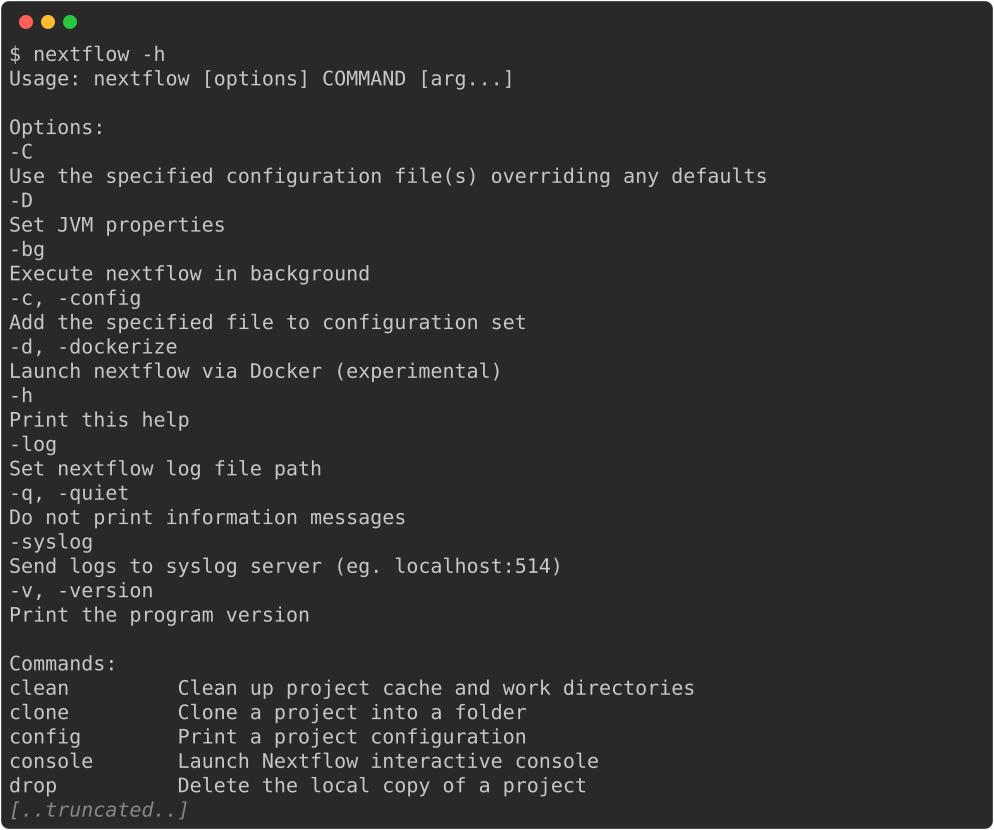
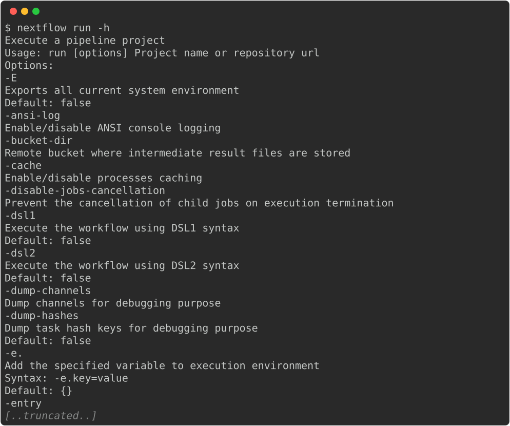
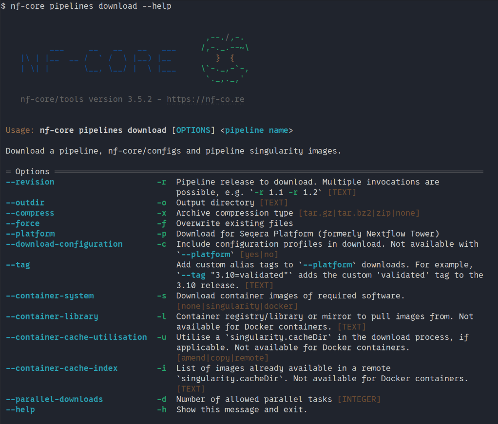
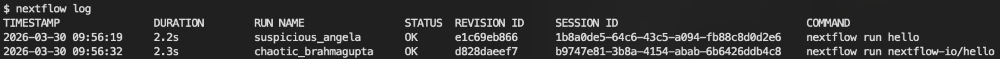
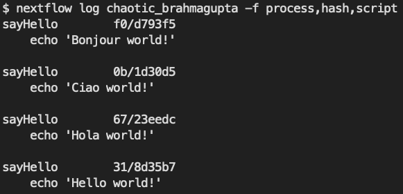

1.2 Running nf-core workflows
Objectives
- Learn about the Nextflow command line interface.
- Learn how to use nf-core tooling.
- Use Nextflow to pull a workflow from GitHub.
- Learn fundamental commands and options for executing workflows.
- Inspect the logs of a Nextflow run.
1.2.1 Introduction to the Nextflow command line
In order to run an nf-core pipeline, you do not need to know how to code in Nextflow, but you will need to use a few Nextflow commands, in particular the Nextflow run command. Nextflow provides a robust command line interface for the management and execution of workflows. The top-level interface consists of options and commands.
Nextflow is pre-installed for this workshop
For this workshop, we have pre-installed Nextflow so you don't need to worry about installing it and can get stuck right into using it.
For future reference, we have some instructions for installing Nextflow in our Tips & Tricks page.
You can list Nextflow options and commands with the -h option:

Options for a command can also be viewed by appending the -help option to that command.
For example, options for the the run command can be viewed:

Exercise 1.2.1
Find out which version of Nextflow you are using with the version option.
Solution
The version of Nextflow you are using can be printed using the -v option:
Alternatively, you can use the -version option, which will produce a more verbose output:
1.2.2 Managing your environment
You can use environment variables to control some low-level aspects of how Nextflow runs. For most users, Nextflow will work without setting any environment variables. However, to improve reproducibility and to optimise your resources, you may benefit from establishing environment variables, which can be exported before running a workflow and will be interpreted by Nextflow.
One particularly useful and important set of Nextflow environment variables are the NXF_*_CACHEDIR variables. When running Nextflow using containers (as is best practice, especially on shared infrastructure like high performance computing (HPC) clusters), it is a good idea to set the paths to where Nextflow will store and look for container images - the Nextflow container cache directory. The NXF_*_CACHEDIR variables do just this, where * is replaced by the upper-case name of the container software you are using. For example, for Singularity images, this is NXF_SINGULARITY_CACHEDIR. You can set these variables by exporting them:
Exporting frequently-used variables
When you're running lots of workflows, you don't want to be having to export these Nextflow variables every time you log into your machine. If you want to have a particular variable set every time you log in, add it to your ~/.bashrc file, which is read every time you log in.
Note that ~/.bashrc is specific to the "bash" shell, which we are using today on our VMs and which is the default shell on many Linux systems. However, not all systems use bash as their shell; for example, the default shell on newer Macs is called "zsh", and the file you would need to edit there is ~/.zshrc.
Exercise 1.2.2
Create a new folder with the path ~/singularity_cache to store your singularity images and export its location using the NXF_SINGULARITY_CACHEDIR environmental variable within your ~/.bashrc file.
Solution
Make a new folder for your Singularity images:
Like before, open your ~/.bashrc file in VS Code:
Go to the bottom of the file and add the following line, replacing <USERNAME> with your provided user name:
Save and close the .bashrc file, then run the command source ~/.bashrc in any active terminal sessions. Alternatively, you can close and re-open your session to cause the uddated .bashrc file to be applied to your session.
Singularity images downloaded by workflow executions will now be stored in the ~/singularity_cache directory.
A complete list of environment variables that you can use to configure Nextflow can be found here.
1.2.3 nf-core tools
nf-core have created a set of helper tools for use with Nextflow workflows. These tools have been developed to provide a range of additional functionality for using, developing, and testing workflows.
nf-core tools is pre-installed for this workshop
As with Nextflow, we have pre-installed nf-core tools so you don't need to install it yourself.
For your reference, see the Tips & Tricks page for information on installing nf-core tools on your onw systems.
The nf-core --version option can be used to print your version of nf-core tools:
nf-core tools are for everyone, with commands intended to help both users and developers. For users, the tools make it easier to execute workflows. For developers, the tools make it easier to develop and test your workflows using best practices. You can read about the nf-core commands on the tools page of the nf-core website or using the command line.
Exercise 1.2.3.1
Find out what nf-core tools commands and options are available using the --help option:
nf-core tools is updated with new features and fixes regularly so it's best to keep your version of nf-core tools up-to-date.
nf-core pipelines download
One very useful nf-core tools command is nf-core pipelines download. Sometimes you may need to execute an nf-core workflow on a computer with no internet connection, for example if you have highly protected data. In this case, you will need to fetch the workflow files and manually transfer them to your offline system. The nf-core pipelines download command makes this process easier and ensures accurate retrieval of correctly versioned code and software containers.
If run without any arguments, the download tool will interactively prompt you for the required information. Each prompt option has a flag and if all flags are supplied then it will run without a request for any additional user input:
- Pipeline name
- Name of workflow you would like to download
- Pipeline revision
- The revision you would like to download
- Pull containers
- If you would like to download Singularity images
- The path to a folder where you would like to store these images if you have not set your
NXF_SINGULARITY_CACHEDIR
- Choose compression type
- The compression type for the downloaded data
- If you are downloading the pipeline to the place where you will run it, this should be
none - If you are downloading and then transferring to another computer, you would typically specify
tar.gzorziphere to speed up transfer of the data to the other computer; the data would then need to be extracted again on the remote computer
Alternatively, you could build your own execution command with the command line options.

The command line method also gives you a few additional options, including the ability to download all of the nf-core institutional configs. This lets you run a workflow completely offline while still having access to these community-created configurations. Note that you must use the command line argument --download-configuration yes to do this; the interactive mode doesn't support this option yet.
Exercise 1.2.3.2
Have a go at using nf-core pipelines download to download an nf-core pipeline along with the nf-core institutional configs. Tell the tool to:
- Download the
nf-core/rnaseqpipeline - Pull the
3.23.0version of the pipeline - Download the institutional configs
- Not download the singularity images for the pipeline (doing so might take a while!)
- Not compress the downloaded data
Consult nf-core pipelines download --help to help you find the right arguments.
Solution
The arguments we want are:
--revision 3.23.0: this pulls the specific version we want--download-configuration yes: this pulls the institutional configs--container-system none: this tells the tool to not download any images--compress none: this tells the tool to not compress the data
The final command will look like:
nf-core pipelines download rnaseq --revision 3.23.0 --download-configuration yes --container-system none --compress none
You should see a new directory where you ran the command:
Let's look at what is inside:
Looking one level deeper, we can see what each folder contains:
nf-core-rnaseq_3.23.0/3_23_0:
total 340K
drwxrwxr-x 2 user3 user3 4.0K Apr 24 01:54 assets
drwxrwxr-x 2 user3 user3 4.0K Apr 24 01:54 bin
-rwxrwxr-x 1 user3 user3 113K Apr 24 01:54 CHANGELOG.md
-rwxrwxr-x 1 user3 user3 11K Apr 24 01:54 CITATIONS.md
-rwxrwxr-x 1 user3 user3 14K Apr 24 01:54 CODE_OF_CONDUCT.md
drwxrwxr-x 2 user3 user3 4.0K Apr 24 01:54 conf
drwxrwxr-x 5 user3 user3 4.0K Apr 24 01:54 docs
-rwxrwxr-x 1 user3 user3 1.1K Apr 24 01:54 LICENSE
-rwxrwxr-x 1 user3 user3 7.0K Apr 24 01:54 main.nf
drwxrwxr-x 4 user3 user3 4.0K Apr 24 01:54 modules
-rwxrwxr-x 1 user3 user3 24K Apr 24 01:54 modules.json
-rwxrwxr-x 1 user3 user3 17K Apr 24 01:54 nextflow.config
-rwxrwxr-x 1 user3 user3 57K Apr 24 01:54 nextflow_schema.json
-rwxrwxr-x 1 user3 user3 1.5K Apr 24 01:54 nf-test.config
-rwxrwxr-x 1 user3 user3 13K Apr 24 01:54 README.md
-rwxrwxr-x 1 user3 user3 23K Apr 24 01:54 ro-crate-metadata.json
drwxrwxr-x 4 user3 user3 4.0K Apr 24 01:54 subworkflows
drwxrwxr-x 2 user3 user3 4.0K Apr 24 01:54 tests
-rwxrwxr-x 1 user3 user3 3.0K Apr 24 01:54 tower.yml
drwxrwxr-x 3 user3 user3 4.0K Apr 24 01:54 workflows
nf-core-rnaseq_3.23.0/configs:
total 68K
drwxrwxr-x 2 user3 user3 4.0K Apr 24 01:54 bin
-rwxrwxr-x 1 user3 user3 1.6K Apr 24 01:54 CITATION.cff
drwxrwxr-x 5 user3 user3 4.0K Apr 24 01:54 conf
-rwxrwxr-x 1 user3 user3 273 Apr 24 01:54 configtest.nf
drwxrwxr-x 4 user3 user3 4.0K Apr 24 01:54 docs
-rwxrwxr-x 1 user3 user3 1.1K Apr 24 01:54 LICENSE
-rwxrwxr-x 1 user3 user3 69 Apr 24 01:54 nextflow.config
-rwxrwxr-x 1 user3 user3 15K Apr 24 01:54 nfcore_custom.config
drwxrwxr-x 2 user3 user3 4.0K Apr 24 01:54 pipeline
-rwxrwxr-x 1 user3 user3 17K Apr 24 01:54 README.md
We can see that the 3_23_0 folder contains the pipeline code, including its main.nf file, nextflow.config file, its modules and subworkflows, along with its configuration folder conf.
Meanwhile the configs folder is where the institutional configs were downloaded. The config files themselves are under the conf directory:
abims.config
adcra.config
alice.config
alliance_canada.config
apollo.config
arcc.config
awsbatch.config
aws_tower.config
azurebatch.config
azurebatchdev.config
...
The pipeline code is set up to find these and include them when you request the appropriate profile; for example, if you run the pipeline with -profile nci_gadi, it will find the config file stored at nf-core-rnaseq_3.23.0/configs/conf/nci_gadi.config and include it in the pipeline's configuration.
1.2.4 Downloading and executing workflows with nextflow
The nextflow command itself can also be used to download pipelines. Nextflow seamlessly integrates with code repositories such as GitHub, allowing you tu use public Nextflow workflows — including nf-core workflows — quickly, consistently, and transparently.
The Nextflow pull command will download a workflow from a hosting platform into your global cache $HOME/.nextflow/assets folder.
If you are pulling a project hosted in a remote code repository, you can specify its qualified name or the repository URL. The qualified name is formed by two parts - the GitHub owner/organisation name and the project/repository name separated by a / character. For example, if a Nextflow project bar is hosted in the GitHub organisation foo at the address http://github.com/foo/bar, it could be pulled using:
Or by using the complete URL:
Alternatively, the Nextflow clone command can be used to download a workflow into the current directory:
This is equivalent to pulling the GitHub repository directly with git clone https://github.com/foo/bar. The nextflow clone syntax simply shortens and cleans up the command.
Once the workflow is donwloaded, the Nextflow run command is used to initiate the execution of a workflow:
Warning
Be aware of what is already in your current working directory where you launch your workflow. If there are other workflows (or configuration files) within the directory, you may encounter unexpected results.
Exercise 1.2.4
Use the nextflow command line tool to clone the nextflow-io/hello Nextflow repository to your local directory, then execute it.
Solution
Use nextflow clone to pull the repository down to your local directory:
You should see the following message:
Now, run the workflow:
You should get the following output:
N E X T F L O W ~ version 25.10.4
Launching `hello/main.nf` [crazy_engelbart] DSL2 - revision: e1c69eb866
executor > local (4)
[a9/b6e0fa] sayHello (1) [100%] 4 of 4 ✔
Ciao world!
Hola world!
Hello world!
Bonjour world!
Note that the second line says Launching `hello/main.nf` ..., which indicates that it was launched from the local directory.
1.2.4.1 More on nextflow run
When you run a pipeline with nextflow run some_pipeline, it will look for a local folder with the workflow name you’ve specified and a main.nf file within. If that file does not exist, it will next look in your $HOME/.nextflow/assets folder to see if you have previously pulled the pipeline. Failing that, it will look for a public repository with the same name on GitHub (unless otherwise specified). If it is found, Nextflow will automatically pull the workflow to your global cache and execute it.
This means it is possible to seamlessly run public Nextflow pipelines without having to manually download them first.
Our recommendation
As you can see, there are a few different ways you can go about running a nextflow or nf-core pipeline. Generally, we recommend always downloading the code to your working directory and not using nextflow pull (and by extension nextflow run with pipelines you haven't already downloaded). This means using either the nextflow clone command or directly cloning the repository with git clone to make sure the code is in your working directory first.
If you need to execute an nf-core pipeline in an environment without an internet connection, you can use the nf-core pipelines download method mentioned above on a computer with internet and transfer it to where it will run. Again, this method ensures that you localise the pipeline code to your working directory first, and makes sure you have all of the required configuration files and singularity images ready for offline use.
We recommend this approach because it is the most flexible approach and gives you control over exacly what version of the workflow is being downloaded and where it is being downloaded to (instead of all pipelines going to $HOME/.nextflow/assets as with nextflow pull/nextflow run). In addition, it provides greater flexibility in modifying configuration files to suit the needs of your data and infrastructure, for example process CPU and memory resources.
More information about the Nextflow run, pull, and clone commands can be found in the Nextflow documentation:
Executing a revision
For each of the commands run, pull, and clone, you can optionally supply the option -r <REVISION> to pull a specific version of the workflow. This can be any valid branch or tag name, e.g.:
or
1.2.5 Nextflow log
It is important to keep a record of the commands you have run to generate your results. Nextflow helps with this by creating and storing metadata and logs about the run in hidden files and folders in your current directory (unless otherwise specified). This data can be used by Nextflow to generate reports. It can also be queried using the Nextflow log command:
The log command has multiple options to facilitate the queries and is especially useful while debugging a workflow and inspecting execution metadata. You can view all of the possible log options with -h flag:
To query a specific execution you can use the RUN NAME or a SESSION ID:
To get more information, you can use the -f option with named fields. For example:
There are many other fields you can query. You can view a full list of fields with the -l option:
Exercise 1.2.5
Use the log command to view the process, hash, and script fields for your tasks from your most recent Nextflow execution.
Solution
Use the log command to get a list of you recent executions:

Query the process, hash, and script using the -f option for the most recent run. In this example, the run name is chaotic_brahmagupta; remember that yours will be different:

1.2.6 Execution cache and resume
When running large (and possibly expensive) workflows, we want to be sure that if we need to re-run the workflow (e.g. a job failed due to low memory or maybe we changed a parameter or added a new sample) that the workflow won't have to start again from the very beginning. Instead, we want to re-use any previously generated outputs that are still valid and aren't affected by any changes we've made to the run. Task execution caching achieves this by keeping track of previous runs and their outputs and re-using them where possible.
In Nextflow, we can utilise this cache by using the -resume option. The cache works keeping track of the file paths, file sizes, and modification times of all input files to a process. It also keeps track of the process definition itself. If these are unchanged between runs, the cached outputs are re-used. If any of these values have changed, the process will be re-run.
The Nextflow cache can be sensitive!
It's important to note that the Nextflow cache looks for any change that might affect the output of each process. This includes:
- Input file modification times
- Changes to the script
- Changes to the container or conda environment used to run the process
- Changes to the `ext` properties, e.g. `ext.args`
Sometimes, you can run into issues where the cache is invalidated and a re-run of a process is forced even when nothing seems to have changed. Often this will happen on some HPC systems where file modification times aren't syncronised perfectly across parallel file systems. In these cases, it can help to apply the process.cache = 'lenient' configuration option to tell Nextflow to only use the file name and size, but not the modification time, to determine whether the cache is valid or not.
See the Nextflow cache documentation for further information on the cache and how to configure it.
Key points
- Environment variables can be used to control your Nextflow runtime
- Nextflow has automatic integrations with online code repositories and supports version control
- You can manage workflows with various Nextflow commands (e.g.
pull,clone,run, andlog) - Nextflow will cache your runs and they can be resumed with the
-resumeoption